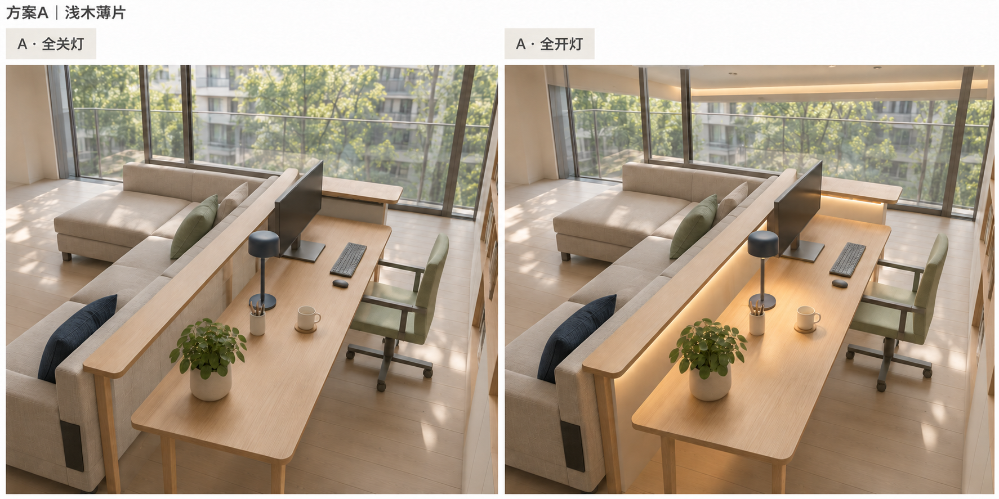
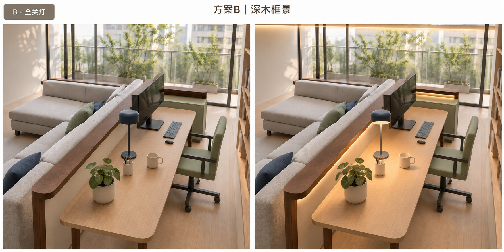
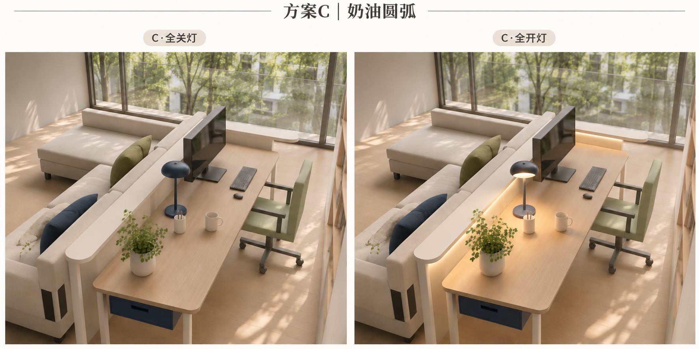
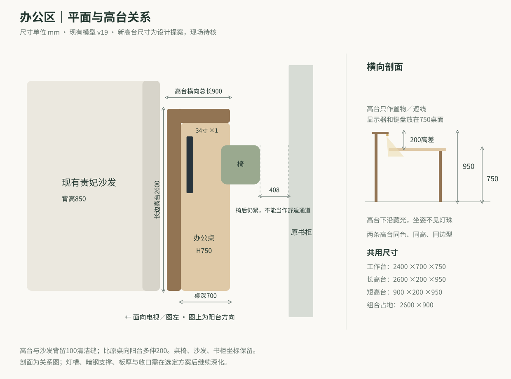

HOME OFFICE / STUDY 01 · 2026.11.06
沙发背后，一张桌与两道高台
提取参考照片的低矮L形高台，取消红框里的新墙与吊柜。用桌面的高低关系、材质和藏光形成层次，让办公区融入自然现代日式的客厅。三套均为独立设计，暂未选定或融合主模型。
面向电视34寸屏 ×1办公椅 ×1两边高台统一950高主模型保留v19
OPTION A
A｜浅木薄片
最轻盈、最容易融入现有空间。用一条细长的浅木L高台整理沙发背面，视觉上保持开放。

左：全关灯，保留自然光。右：本方案高台藏光、工作灯及环境灯开启。均为摄影感概念图。
浅木暖白灰绿深蓝
材料与造型
两边高台与桌面均用同色哑光浅橡木，搭配灰绿座椅、深蓝台灯；用不同厚度与高差形成层次。
高台厚30，外露平面圆角R35；桌面厚30、R60。空置端一只500×400×100浅抽，主工位膝部不设横抽。
灯光与取舍
高台底内侧沿长短两边连续藏光。浅木反光更柔，工作灯可独立开启；开灯时避免把整块木面照成黄色。
木色面积较大，实样应选低黄度浅橡木，避免地板与桌面两种木纹同时过于醒目。
查看同版尺寸模型参考
OPTION B
B｜深木框景
风格层次最鲜明。这套更贴合你希望在浅木基底里加入深木、绿色和蓝色的方向。

左：全关灯，保留自然光。右：本方案高台藏光、工作灯及环境灯开启。均为摄影感概念图。
深胡桃浅木灰绿深蓝
材料与造型
深胡桃木只用在两边高台和支撑，低桌面保持浅木；短边下设置灰绿浅端柜，深蓝保留在台灯和软装中。
高台厚45，外露平面圆角R45；桌面厚30、R60。短边下浅端柜约500×200×720，只收小物与线材，不作为深文件柜。
灯光与取舍
灯带藏进深木下口，点亮后形成清楚但克制的暖光边。工作灯不与氛围灯捆绑；白天可完全关掉高台灯。
深木会增强边界感；建议维持开放支撑，不把沙发背整面封成深木墙板。
查看同版尺寸模型参考
OPTION C
C｜奶油圆弧
轮廓最柔和。用奶油白高台包住浅木工作面，以较大的端部弧线呼应圆角桌和弧形墙角。

左：全关灯，保留自然光。右：本方案高台藏光、工作灯及环境灯开启。均为摄影感概念图。
奶油白浅木深蓝绿色
材料与造型
两边高台均为哑光暖白实体面材，桌面为浅木；末端一只小深蓝悬抽，绿植与原沙发绿蓝软装呼应。
高台厚35，外露平面圆角R80；桌面厚30、R60。深蓝浅抽约500×400×100；大圆弧集中在端头，直边仍是骨架。
灯光与取舍
灯光主要擦过高台内缘和下方木面，避免亮白高台产生刺眼高光。桌面灯维持3500–4000K可调，氛围灯3000K。
面材与木作交界需要留可控的细缝，避免追求无缝而失去检修和材料伸缩空间。
查看同版尺寸模型参考
三套共用的尺度
以下均为本轮暂拟参数。长向沿沙发背、横向由沙发指向书柜；高台是家具的一部分，不向上增加隔墙或吊柜。
| 部件 | 长 ×深 ×高 / mm | 使用方式 |
|---|
| 办公桌 | 2400 ×700 ×750 | 沿用当前桌面坐标与双人桌比例，现阶段只摆一椅、一屏 |
| 沙发背长高台 | 2600 ×200 ×950 | 置物、理线；高于桌面200，高于现沙发背100 |
| 阳台端短高台 | 900 ×200 ×950 | 含长高台转角宽度，与长边同色、同高、同边型 |
| 整组占地 | 2600 ×900 | 不含椅；比原桌增加一条200宽高台及200深短端 |
| 显示器 | 34寸，单屏 | 约810宽的比例占位，继续放在750工作面，配可调支架 |

灯光、线路与收口
三路独立控制
高台长短两边均藏3000K可调光线性灯，铝槽内退、漫射罩遮住灯珠；坐在桌前和沙发上都应看不到直接光源。独立台灯建议3500–4000K可调，显色指数Ra≥90作为选型目标。环境光沿用四区方案的柔和间接光。
工作面照度先以约300–500 lx为设计目标，后续按所选灯具配光及现场测量校核；效果图亮度不代表实际照度。晚间保留低亮度环境补光，减少屏幕与周围的突兀明暗反差。
把日常细节藏好
强弱电分区走线，桌下设可拆理线槽，线从支撑内下行；灯带电源与连接件留可检修位置。屏幕支架和走线不占高台置物面；长高台用内藏框架配多点支撑，跨度和连接须在深化时校核。
桌沿做触摸可感的软边，外露转角按各套R值控制。大曲线留在端头，细缝收口与材质交接保持直、少、连续。高台与沙发背之间留100清洁缝，并安排端头吸尘或可拆清洁方式。
眩光与布灯原则参考 OSHA：电脑工作区照明环境；显示器距离和高度按 OSHA：显示器设置继续结合使用者调整。以上是设计建议，并非对本住宅作规范认证。
审美与实用性分开判断
我更倾向B。深木高台与灰绿端柜给这块区域一个清楚的形象，同时保留浅木桌面和暖白环境。A最轻盈，C的圆弧最明显，三套的选择取决于你希望办公区成为点缀还是更有存在感。
审美评审统一看色彩、现代性、构图、视觉层次，以及可达性／可用性的视觉表达，六项等权；不把主观分数当作尺度验收。开关灯同机位用于比较，窗外景观和微小材质细节属于概念表现。
实用性审查以v19的网格包络为依据：椅后至书柜约408，桌边至书柜约838。前者仍紧凑，不能按舒适通行带理解。本轮按你此前要求保留桌椅和沙发位置；选定方案后，仍须核对坐下、起身、后退和书柜开门的动作。高台深200只供小物，主办公面700深保留。
状态：三套均为候选方案，未应用到主模型、未启动v20、未更新原VR。独立Blender模型已保存并重开核对桌高750／两边高台950、单屏单椅，五项主模型文件前后校验一致。概念图不替代尺寸图和现场复尺。
交付与核对记录